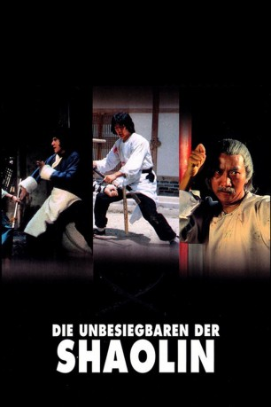

#5080 Die Unbesiegbaren der Shaolin
Alternativ: Snake and Crane Arts of Shaolin (Englischer Titel)
 
 IMDB-Wertung: 6.7 / 10
IMDB-Wertung: 6.7 / 10  Metascore: 0
Metascore: 0 
Acht Großmeister der Shaolin treffen sich, um eine völlig neue Kampftechnik zu entwickeln. Detailliert schreiben sie diese in einem Buch nieder. Als eines Tages die acht Großmeister auf myteriöse Weise verschwinden breitet sich das Chaos aus. Durch einen Zufall gelangt Yin Fung, ein junger Kung-Fu-Kämpfer, in den Besitz dieser geheimnisvollen Schrift. Damit beginnt eine erbarmungslose Jagd. Der Chef des Drachen-Clans setzt eine Armee von Killern auf Yin Fung an, um das begehrte Buch in die Hand zu bekommen. Doch Yin Fung kämpft den Kampf seines Lebens und er rechnet gnadenlos mit den Mördern der Shaolin-Meister ab.
Jahr: 1978
Dauer: 101 Minuten
FSK: 16
Land: Hong-Kong Studio: A.B.Tonspuren:
Untertitel: Deutsch,
Auflösung: 1080p (1920x808) Größe: 6922 MB
Genre: Action, Drama
Regisseur: Chi-Hwa Chen
Drehbuch: Praxis Films
Soundtrack:
Darsteller:
 Jackie Chan als Hsu Yin-Fung
Jackie Chan als Hsu Yin-Fung Nora Miao als Tang Pin-Er
Nora Miao als Tang Pin-Er- Jeong-Nam Kim als
- Yung-kuo Li als
- Ya Ying Liu als (Guest star
- Hsin Yi Chen als
- Kang Chin als
- Chun Cho als
- Han Chang Hu als
- Kuan-Hsien Huang als
- Sang-ho Ju als
- Ki Bum Kim als
- Wang Kuk Kim als
- Min-Lang Li als
 Wen Tai Li als
Wen Tai Li als - Chou-hung Lin als
- Do-shik Ma als
- Ching-Shun Mao als
- Tien Miao als
- Kang Peng als
- Ren Tieh als
- Han Ting als
- Wei Ho Tu als
- Lin Tung als
- Chi-Sheng Wang als
- Quen Wang als
- Te-Shan Wu als
- Chris Hilton als Oddball Lu , uncredited
- Warren Rooke als Hsu Yin-Fung , uncredited
Datei: X:\HD-Eastern-Collections\Jackie Chan\Unbesiegbaren der Shaolin, Die (1978, FSK16, 1920x808).mkv seit 23.12.2016
Festplatte: HD Eastern+Western
 Es gibt insgesamt 58 Filme in der Gruppe 'HD-Eastern-Collections\Jackie Chan'
Es gibt insgesamt 58 Filme in der Gruppe 'HD-Eastern-Collections\Jackie Chan'